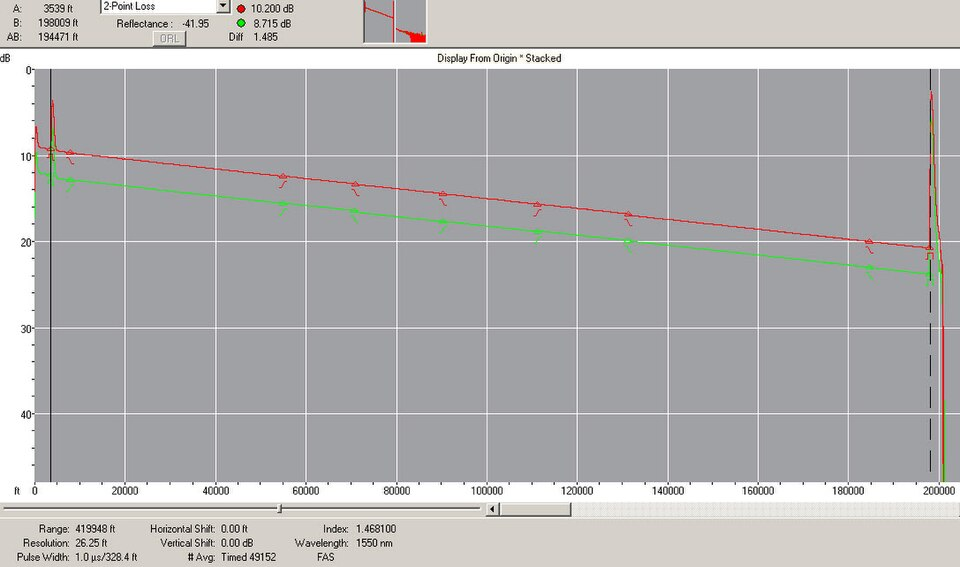

Check a fibre loss budget and read an OTDR trace
An optical link is losing more power than expected. Use the power meter for end-to-end loss and the OTDR trace to decide which part of the link deserves inspection.
A calculator or spreadsheet for the independent exercise. Use an approved optical trainer and supervised lab for physical work. Handle connector inspection and cleaning using the equipment procedure. Treat unknown fibre ends as active.
Find the optical test port and the trace axes
An optical loss test set uses a source at one end and a meter at the other. It compares the received power with a reference at the chosen wavelength. An optical time-domain reflectometer sends light pulses and times returned light. That reveals where an event is along the fibre. Setup, launch cable and chosen pulse width change what you can resolve.

Photo by Electron, scaled for the course. Original · CC BY 3.0.


Image by OLC Fiber from Lakewood, CO, USA, scaled for the course. Original · CC BY 2.0.
.jpg){kind=link}
Watch on YouTube · Follow an event on the optical trace and use its location to choose a follow-up check. Reading an OTDR Trace · Corning Optical Communications.
Calculate what an acceptable link should lose
For the training single-mode link use 0.80 km, 0.35 dB/km at the exercise wavelength, two connector pairs at 0.30 dB each and two splices at 0.10 dB each. The sum is 0.28 + 0.60 + 0.20 = 1.08 dB. With a 0.30 dB testing allowance in the exercise, investigate loss above 1.38 dB. On a real job use the project’s design and contract limit.
| Observation | What it tells you | What to do next |
|---|---|---|
| Test set reads 1.95 dB | Exceeds the training limit by 0.57 dB | Confirm test reference, wavelength and connectors |
| Dominant reflection near launch end | May be a near connector event | Use launch fibre and inspect/clean per procedure |
| Lossy event near 620 m | One local feature may account for excess | Map it to the as-built and compare from the other end. |
| Steeper slope along a segment | Distributed attenuation differs from model | Check bend history, length and wavelength |
Distinguish events from measurement artefacts
The OTDR’s dead zone can hide a next event after a large reflection. A launch fibre helps separate the first installed connector from the launch. A receive fibre helps see the final connector. A splice can look like a gain when backscatter changes. Use comparable traces in both directions when the test procedure calls for it.
After a supervised cleaning or permitted correction, repeat the end-to-end loss with the same reference procedure. Keep trace and loss as two separate records. Fiber Optic Association practical OTDR reference.
Hand over both measurements
Keep link ID, endpoints, test wavelength, reference method, allowable loss, actual loss, main events and why you believe they belong to the installation. Record what changed before the final measurement.
T10 · Electromagnetic waves, antennas and optical fibre
T32 · RF transmission lines, antenna matching and link budget
T38 · Time series, bus layers and evidence quality
T39 · Optical loss, reflections and fibre test limits